An Instruction
Inflation Analyzing Framework for Dynamic Binary Translators
（动态二进制翻译器的指令膨胀分析框架）
 Xie Benyi1,2（谢本壹）
Xie Benyi1,2（谢本壹）
🧑Yan Yue1,2, 🧑Yan
Chenghao1,2, 🧑Tao Sicheng3, 🧑Zhang Zhuangzhuang3,
🧑Li Xinyu1,2, 🧑Lan Yanzhi1,2, 🧑Wu Xiang1,2, 👨Liu
Tianyi4, 👩Zhang Tingting1,5, 👨🏫Zhang Fuxin1,2
 计算所1 ,
计算所1 ,
 国科大2 ,
中科大3 ,
UTSA4 ,
国科大2 ,
中科大3 ,
UTSA4 ,
 龙芯5
龙芯5
ChinaSys 2024 2024.6.16
1 TOC
- TOC
- Background
- Problem
- Related Work
- Design
- Evaluation
- Application
- Summary
2 Background
Dynamic Binary Translator (DBT)
2.1 Overview: DBTs
Abstraction
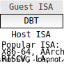
Examples
Usages
- Migration
- Instrumentation
- Optimization
- …
Regardless of various usages,
performance
is the primary design metric for all DBTs.
3 Research Problem: Performance
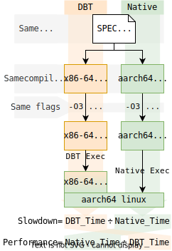
Example
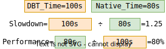
Real world DBTs(computational workloads)
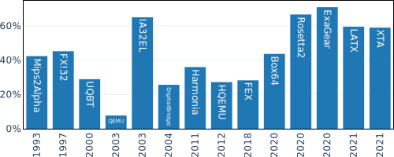
Performance
gaps
3.1 How to characterize performance?
Time🙀?
uArch: OoO, Multi-Iussed
| DBT | Translated_code/Total |
|---|---|
| ExaGear | 99.44% |
| Rosetta2 | 99.63% |
| LATX | 99.87% |
| Box64 | 98.9% |
| FEX | 99.65% |
| QEMU | 99.93 |
Inflation😸!
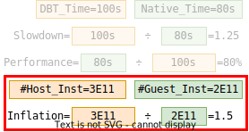
Performance∝Inflation
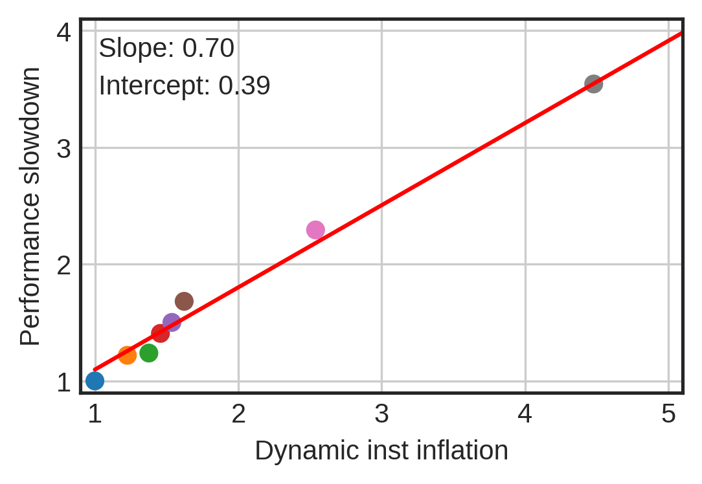
Higher inflation indicates greater performance slowdown.
4 Related Work: Performance Analysis
Overall Performance Analysis
- Manual Analysis
- Ottoni etc, Borin etc, Dey etc, …
- Benchmarks:
- full-system: SimBench, VITS, HyperBench, …
- instruction: Fog’s testp, Uops.info, …
- Translation Auto Generation (Optimizations)
- ISAMAP, Captive, learn, …
Specific Performance Analysis (Optimizations)
- Software:
- indirect branches, arithmetic flags, …
- Hardware:
- Indirect branch lookup table
- VLIW: Transmeta’s Cruose, IBM’s DAISY, …
- Inst fusion
- ISA extension: LoongISA, LoongArch, …
- …
4.1 Manual Analysis: Ottoni etc
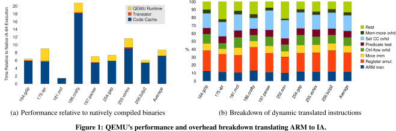
Reference:
- Ottoni G, Hartin T, Weaver C, et al. Harmonia: A transparent, efficient, and harmonious dynamic binary translator targeting the Intel® architecture [C]//Proceedings of the ACM International Conference on Computing Frontiers. 2011: 1-10.
- Systematic
- Coarse-garined
- Need source code
4.2 Micro Benchmarks: Fog’s testp
…………
Reference:
- Fog A. X86-64 instruction test programs (testp) [EB/OL]. 2023. www.agner.org/optimize/testp.zip.
- Fog A. 4. Instruction tables: Lists of instruction latencies, throughputs and micro-operation breakdowns for Intel, AMD, and VIA CPUs [Z]. 2022.
- Fine-grained (instruction-level)
- Designed for uArch
- Lacks systematicity
5 Design
An Instruction Inflation Analyzing Framework for DBT: Deflater
Reductionism is the view that a complex system is just the sum of its parts.
- Systematic
- Fine-grained (instruction-level)
5.1 Mathematical Model
Observation: To preserve the guest’s precise exception, practical software-based DBTs tend not to employ optimizations that could potentially break instruction boundaries.
\[ Inflation = \frac{\#insts_{host}}{\#insts_{guest}} \] \[ = \frac{ \sum_i[\mathcal{E} inst_i \times \textrm{inf}({inst_i})] - \sum_j [\mathcal{E} TB_j \times \textrm{opt}(TB_j)] - \epsilon }{\sum_i\mathcal{E} inst_i} \]
5.2 BenchMIAOes & InflatSim
BenchMIAOes(Micro benchmarks)
InflatSim(Trace-based simulator)
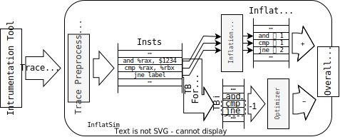
Like a non-functional DBT.
DBT
6 Evaluation Setups
| DBT | Company | Version | Guest | Host |
|---|---|---|---|---|
| ExaGear | Huawei | 2.0.0.1 | x86_64 Linux | Kunpeng (ARMv8.2-A) Linux |
| Rosetta2 | Apple | 289.7 | x86_64 Linux | M-series (ARMv8.5-A) Linux |
| LATX | Loongson | 1.3.0 | x86_64 Linux | LoongArch Linux |
| QEMU | - | 8.0.0 | x86_64 Linux | AArch64 Linux |
6.1 Evaluation: Instruction Inflation
Dynamic code inflation of instructions extracted by BenchMIAOes from DBTs.
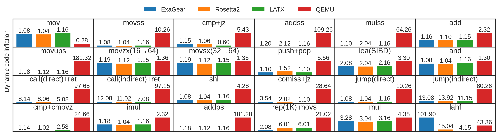
Dyn_Inst%: mov 17.32%, movss/d 14.26%, jcc 9.72%, add/subss/d 9.50%, add/sub 8.83%, cmp/test 8.66%, muls/ps/d 8.40%, movsx/sxd/zx 3.95%, push/pop 3.00%, lea 2.96%, and/or/xor 2.13%, call/ret 1.67%, sh/sal/r 1.46%, …
- QEMU: high inflation;
- ExaGear, Rosetta2, LATX: inflation >1, ≈1, <1.
6.2 Evaluation: Optimizations
Dead code elimination. If the %rdx is unused, DBT does not calculate the product’s higher bits.
Address pre-calculation. If the same address is used multiple times, DBT pre-calculates the address.
6.3 Evaluation: Overall
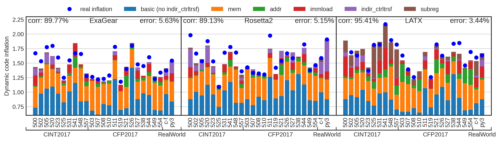 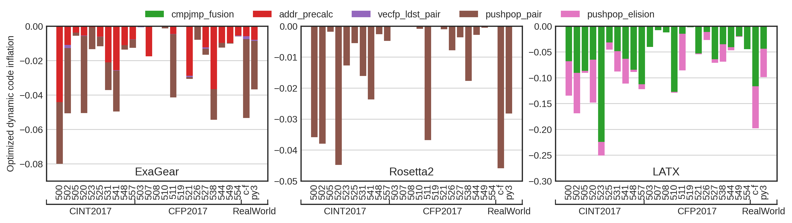
7 Application: Opt Workflows
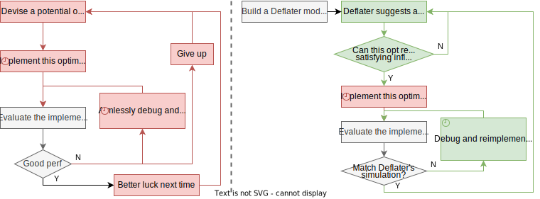
The DBT optimization workflows without the guide of Deflater (left), and with the guide of Deflater (right).
😿
😸
7.1 Application: Opt QEMU
A Potential Optimization
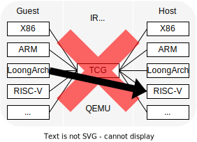
| Simulation | SLOC | time | |
|---|---|---|---|
| Deflater | trace | ≈400 | hours |
| Real Implement | functional | ≈8000 | weeks |
Evaluation
| Before Opt | CINT2017 | CFP2017 | Error |
|---|---|---|---|
| Deflater | 9.97 | 28.63 | - |
| Real | 9.87 | 28.50 | 6.61% |
| After Opt | CINT2017 | CFP2017 | Error |
|---|---|---|---|
| Deflater | 1.58 | 1.60 | - |
| Real | 1.62 | 1.55 | 4.64% |
| Result | CINT2017 | CFP2017 | Error |
|---|---|---|---|
| Inflation Reduced | 83.59% | 94.56% | 4.64% |
| Performance | x2.99 | x7.12 | - |
8 Summary
- An inflation analyzing framework: Deflater
- A mathematical model
- A collection of Micro Benchmarks: BenchMIAOes
- A inflation simulator: InflatSim
- Analyzed 3 commercial DBTs 1 open-source DBT
- High correlation
- Low simulation error
- Applied to QEMU optimization
- Efficient simulation
- Accurate suggestion
9 🎉Thanks🎉
QnA